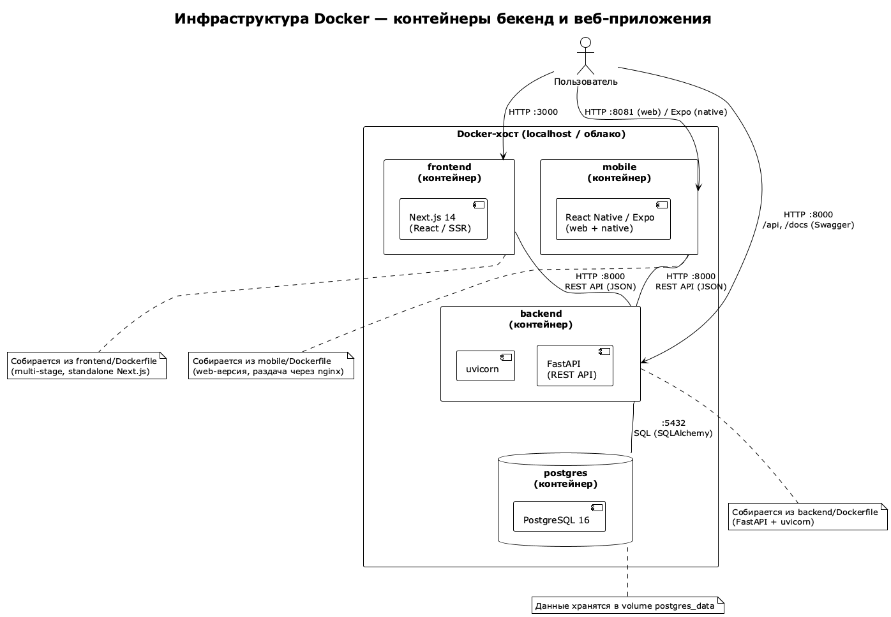

Обзор
Веб-приложение управления событиями, задачами и заметками с AI-аналитикой.
Раздел lab4/task6 описывает инфраструктуру проекта.
Архитектура
Backend (FastAPI) + Frontend (Next.js) + Mobile (React Native/Expo) + PostgreSQL, контейнеризованы в Docker. CI/CD — GitHub Actions, качество кода — SonarQube.

Развёртывание
cd lab4/task6
docker compose up --buildBackend: localhost:8000 (Swagger /docs) ·
Frontend: localhost:3000